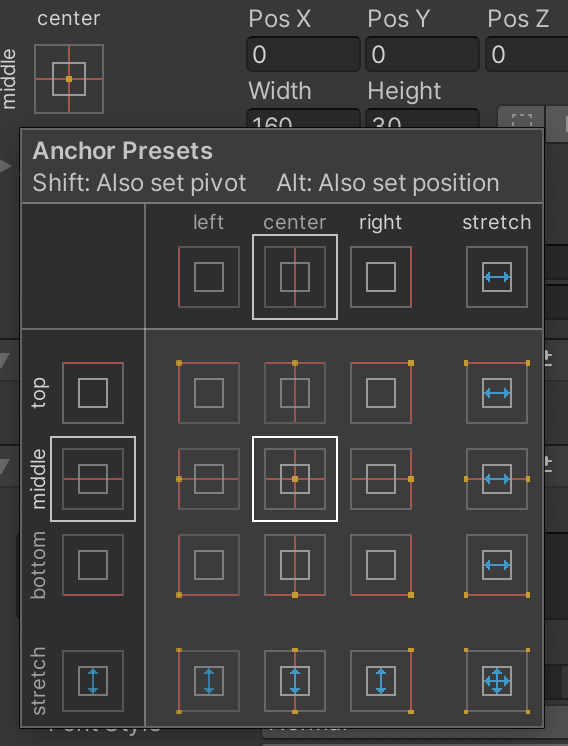

ここでは文字列を画面上に表示する方法について学びます。
演習を行う前に準備をしましょう。
アセットフォルダの Scenes フォルダの中にシーンを新規作成し、シーン名を「Moji Scene」にする。背景色は任意で構わない
新規作成したシーンへ移動する
ヒエラルキー右クリック → Create Empty で GameObject というゲームオブジェクトを新規作成し、名前を「PROGRAM」にする (Position は適当で良いです)
次にこちらを参考にして Visual Scripting のセットアップもします。
Scripts フォルダの中に入り、空いている部分を右クリックしてメニューを表示し、Create → Visual Scripting → Script Graph を選ぶ
Scripts フォルダ内に「New Script Graph」というアセットが出来るので「Moji Script」に名前を変更する
PROGRAM に Script Machine コンポーネントをアタッチする
Script Machine の Graph の None と書いてあるセルに Moji Script をドロップする
Unity で使われている GUI 機能のことを Unity UI と呼びます。
テキストエリアやボタン、スクロールバーなどの GUI パーツを画面に表示するために利用します。
では早速以下の手順でテキストエリアを作成してみましょう。
ヒエラルキー右クリック → UI → Text を選択すると Canvas というフォルダと Text というゲームオブジェクトが出来る。
Text を MyText に名前を変更する
ここまでで図 1 の様な文字列が画面上に出ていると思います。
図1. 文字列の表示
次に文字列の表示位置を変えてみましょう。
通常のゲームオブジェクトの場合は Transform コンポーネントの Position で位置を変更しますが、Unity UI で使う GUI パーツの場合は Transform コンポーネントの代わりに Rect Transform コンポーネントを使って位置を変更します(図2)。
図2. Rect Transform コンポーネント
図2 の左上に center と middle と書いてある四角形がありますが、これをアンカーと言います。
このアンカーを使って GUI パーツを表示する中心の位置を決めることが出来ます。
ユーザーが使っているモニターサイズはまちまちなので、ピクセル値を使って GUI パーツの座標を直接指定すると位置が激しくズレる時があります。
そこでアンカーを使って GUI パーツの大まかな表示位置を指定する必要があります。
では次の手順でアンカーの位置を画面左上にしてみましょう。
アンカーのアイコンをクリックしてアンカープリセット(設定用のポップアップ)を開く(図3)
図3. アンカープリセット
左上にアンカーをセットするため、アンカープリセットの左上のマス目をクリックしてアンカープリセットを閉じる(図4)
図4. アンカーを左上にセット
PosX と PosY でアンカーからの位置を調整をする。今回は PosX に 100、 PosY に -20 を入れる
後は普通のワープロの様に、以下の手順で文字列の内容、大きさ、色等を変更できます。
文字列を変更するには Text コンポーネントの New Text と書いてある文字列を変更する。今回は「こんにちは」と入れる。
大きさを変更するには Text コンポーネントの Font Size を変更すると文字の大きさが変わる。ただし大きくしすぎると表示されなくなるので Rect Transform コンポーネントのの Width(幅)と Height(高さ)も変更する。今回は Font Size を 32、Width を 160、 Height を 50 にする
色を変更するには Text コンポーネントの Color を変更する。今回は黄色(RGBA=(255,255,0,255))にする。
これで文字列が図 5 の様に変わると思います。
図5. テキストの編集
スクリプトから文字列を変更するには Text Set Text ユニットを使います。
例えば Moji Script に図 6 を入力して下さい。
このスクリプトを実行し、Jump ボタンを押すと文字列が HOGE に変わります。
なお Text Set Text ユニットで文字列を変更するためには、Game Object Find ユニットを使って文字列を変更したいゲームオブジェクト(今回は MyText )を検索して Text Set Text ユニットに入力する必要があります。
図6. Moji Script の例
またスコアや経過時間など、数字を表示したい場合もあると思います。
その場合は図7の様に Integer To String ユニットを使って数字を文字列に変換できます。
図7. 数字を文字列に変換